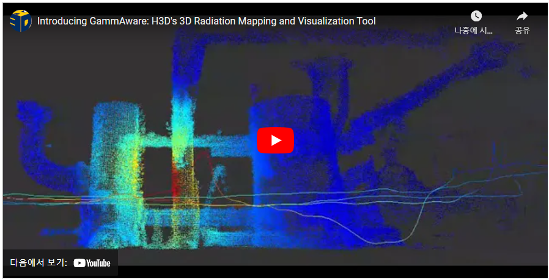

3D Radiation Mapping and Visualization Tool H3D GammAware
H3D H 및 M 시리즈의 3D Radiation Imaging 기능과 융합기술을 기반으로 한 공간 맵핑 기술을 결합하여 오염지역의 계측결과를 이상 모델의 위치를 정확한 공간에서 확인할 수 있는 시스템 입니다.
Gamma-Ray Imaging Spectrometers
최고의 에너지 분해능과 사용자 편의성을 갖춘 필드에 최적화된 방사선원 시각화 토탈솔루션


Applications / 응용분야
Check out our latest and hottest feature updates, success stories, and marketing tips.